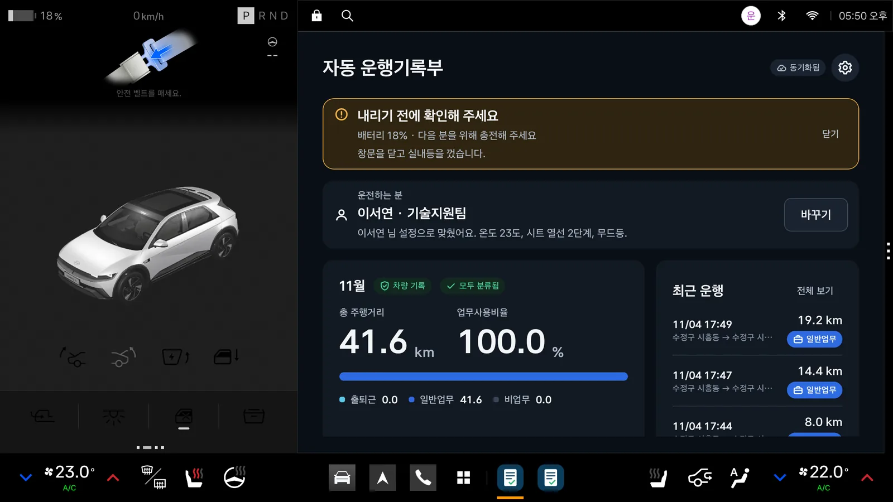
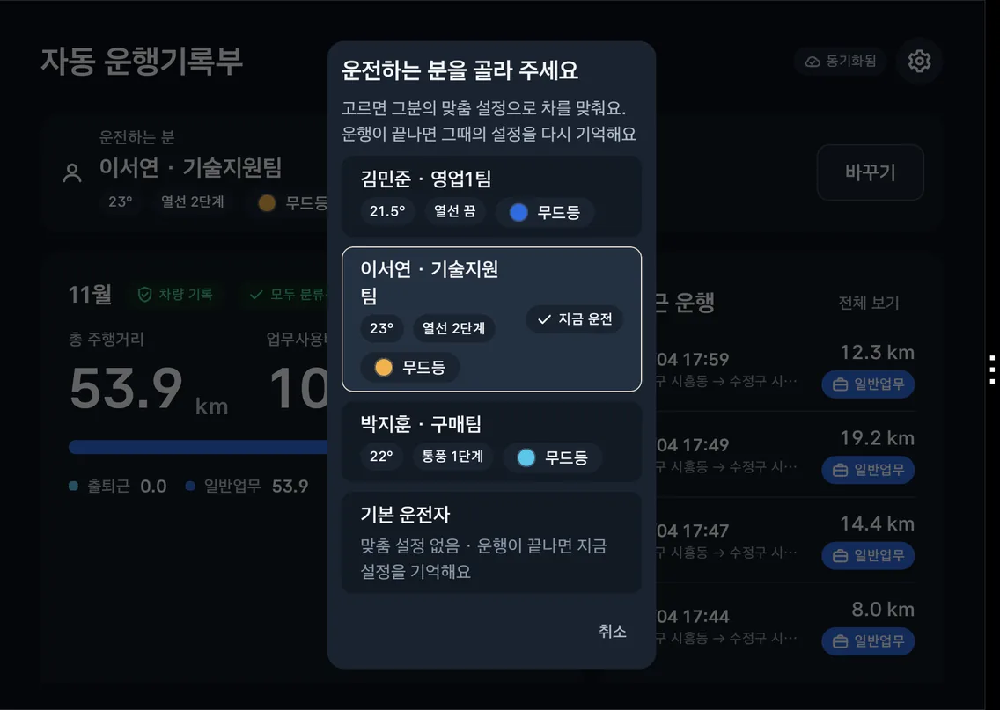
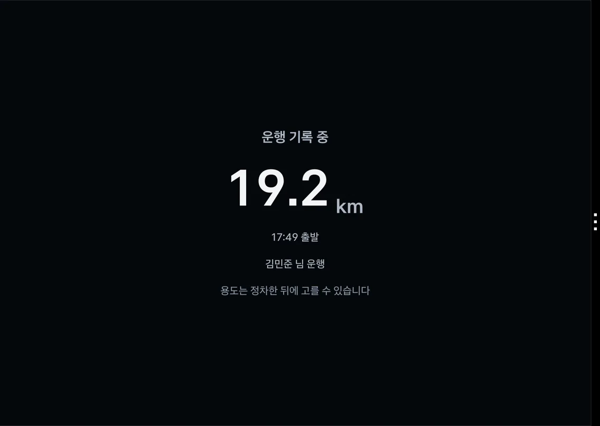
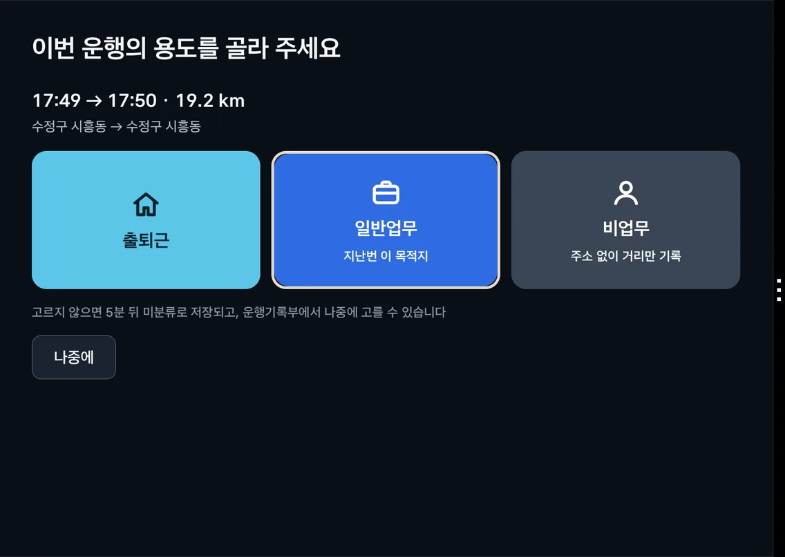
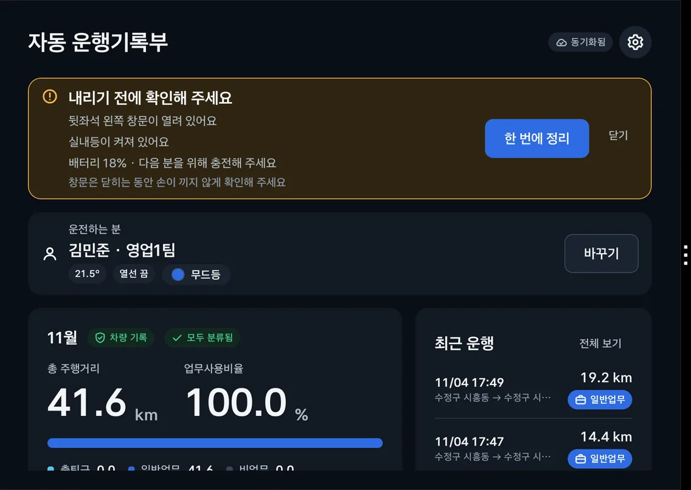

운전자
매 운행 계기판을 보고 적어야 해서 결국 월말에 몰아서 씁니다. 공용차는 탈 때마다 좌석·온도부터 다시 맞춥니다.
Pleos Connect 차량용 앱 · 법인 공용차
공용차에 타면 운전자를 알아보고 그분의 온도·시트 열선·무드등으로 차를 맞춥니다. 계기판 거리로 운행을 기록하고, 정차하면 한 번 누르거나 말로 용도를 남깁니다. 내리기 전에는 열린 창문과 켜진 실내등까지 정리합니다.

왜 필요한가
매 운행 계기판을 보고 적어야 해서 결국 월말에 몰아서 씁니다. 공용차는 탈 때마다 좌석·온도부터 다시 맞춥니다.
누가 언제 탔는지, 차가 어떤 상태로 반납됐는지 모릅니다. 창문이 열린 채, 배터리가 바닥난 채 다음 사람에게 넘어갑니다.
몰아서 쓴 기록은 믿기 어렵고, 업무사용비율은 엑셀로 다시 계산합니다. 세무서가 요구하면 서식에 옮겨 적어야 합니다.
작동 방식
지난번 운전자를 기본으로 보여 주고, 한 번 누르거나 “운전자 김민준으로 바꿔”라고 말하면 됩니다. 그분이 마지막으로 쓴 공조 온도·시트 열선·무드등으로 차가 바뀌고, 운행기록부의 사용자(부서·성명) 칸에 적힙니다. 회사의 다른 공용차를 타도 같은 설정이 따라옵니다.

기어가 P를 벗어나는 순간 계기판 누적거리·배터리·출발 주소를 차량에서 직접 읽습니다. 주행 중 화면에는 누를 것이 없고, 시작은 음성으로 알립니다.

P에 두면 무드등이 노란 신호로 켜지고 거리·시간을 음성으로 알린 뒤 용도를 묻습니다. 출퇴근·일반업무·비업무 중 하나를 누르거나 말하면 무드등이 용도 색으로 잠깐 빛났다가 원래 색으로 돌아옵니다. 같은 목적지는 지난번 용도를 먼저 권합니다.

차가 “용도와 업무 내용을 말씀해 주세요”라고 물으면 “업무, 거래처 납품 미팅”이라고 답하면 됩니다. 일반업무로 기록되고 업무 내용이 운행기록부 비고에 들어가며, 차가 되읽어 확인시킵니다. 차 안 음성 인식으로 듣고 녹음은 남기지 않습니다.
운행을 마치면 열린 창문·켜진 실내등·배터리 부족을 확인해 알리고, [한 번에 정리]로 창문을 닫고 실내등을 끕니다. 창문·문은 정차 중 운전자가 직접 누를 때만 움직입니다. 반납 상태는 관리자 웹 차량 현황에 올라갑니다.

관리자 웹에서 국세청고시 「업무용승용차 운행기록부」 별지와 같은 칸으로 인쇄·PDF를 만들고, 명세서에 옮길 차량별 업무사용비율을 CSV로 받습니다.
차량 연동 · Pleos Connect SDK
모든 제어는 차가 지원하는 범위를 먼저 확인하고, 바꾼 뒤 다시 읽어 실제로 바뀐 것만 성공으로 봅니다.
고른 운전자의 운전석 온도, 시트 열선·통풍, 무드등 색. 운행이 끝나면 그때 설정을 다시 기억합니다.
HVAC.setHvacTemperature Seat.setHvacSeatTemperature Light.setAmbientLightBrightnessColor
분류를 기다리면 노란 신호, 고르면 용도 색. 끝나면 운전자가 쓰던 색·밝기·켜짐 상태 그대로 되돌립니다.
Light.setAmbientLightSwitch Light.setAmbientLightBrightness
창문 열림·실내등·문 잠김·배터리를 확인하고, 운전자가 누르면 창문을 닫고 실내등을 끄고 문을 잠급니다.
Window.setWindowPosition Light.setCabinLightSwitch Door.setDoorLock EvBattery
기어로 운행 시작·정차를 알고, 계기판 거리와 출발·도착 주소를 차량과 내비게이션에서 읽습니다.
AAOS GEAR_SELECTION Odometer NaviHelper
안내와 듣기 모두 차 안 음성 엔진으로 처리해 목소리와 문장이 차 밖으로 나가지 않습니다.
TextToSpeech (ON_DEVICE) SpeechToText (ON_DEVICE)
주행 중에는 누를 것이 없는 화면만 보여 주고, 차를 움직이는 버튼은 P에서만 열립니다.
CarUxRestrictionsManager distractionOptimized
위에서 본 차 그림에 열린 창문을 표시하고 배터리·계기판·문 잠김·실내등·온도·시트 열선을 한눈에 보여 줍니다. P에서는 창문 닫기·문 잠그기·실내등 끄기를 바로 누릅니다.
Window Door Light EvBattery Odometer
처음 열면 네 장짜리 사용법을 소리와 함께 보여 줍니다. [도움]을 누르고 "차 상태 알려 줘"처럼 말하면 답하고 그 화면으로 데려다줍니다.
SpeechToText (ON_DEVICE) TextToSpeech (ON_DEVICE)
기업용 관리자 웹
차량을 6자리 연결 코드로 회사에 연결하면, 기록은 인터넷이 될 때 올라갑니다. 서버가 멈춰도 기록은 차 안에 남습니다.
신뢰와 개인정보
계기판 거리·용도·운전자·업무 내용을 차량별 해시 체인으로 묶어, 나중에 바꾸면 흔적이 남습니다.
주소는 출발·도착 두 시점만 읽습니다. 이동 경로와 속도는 저장하지 않습니다.
비업무로 고르면 주소·방문처·업무 내용을 바로 지우고 거리만 남깁니다.
기록은 SQLCipher, 설정은 Android Keystore로 암호화합니다. 동의를 철회하면 즉시 삭제합니다.
도입
관리자 웹에서 기업과 관리자 계정을 만듭니다.
관리자 웹에서 받은 6자리 코드를 차 화면에 입력합니다. 차는 정차 중에만 받습니다.
직원은 가입 코드로 가입하고, 관리자가 승인하면 차의 운전자 명단에 나타납니다.